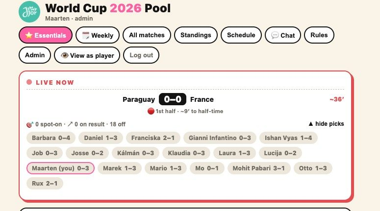
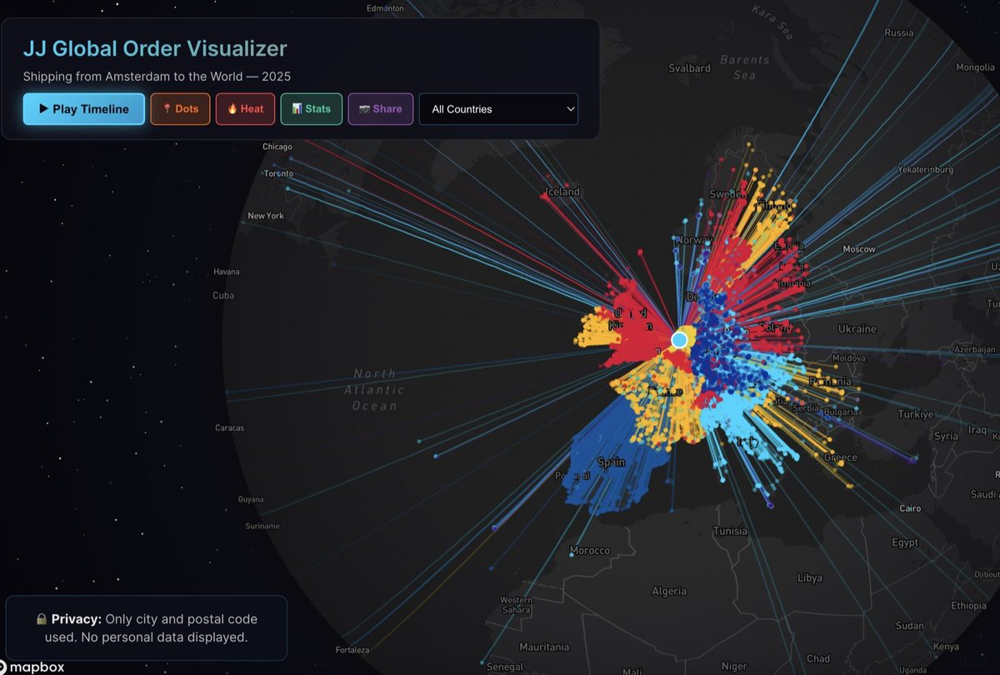

Idea to live in an hour: building the office World Cup pool
How a €200 Scorito bill turned into a serverless weekend project for 30 colleagues.
Tools built with AI. Some run daily inside companies, some are just for fun.

WK 2026 Prediction PoolAn office World Cup pool I built instead of paying Scorito €200 per group: idea to live in about an hour, now used by 30 colleagues. Live scores, match minutes and goalscorers auto-import from a public API, and the leaderboard reshuffles in real time during matches. Weekly bonus rounds, closest-guess metagames, fully customizable scoring. Free, no ads.
 Stock Dashboard · JJ
Stock Dashboard · JJ
An operational stock command-centre for a nutrition brand that tracks every SKU across EU & US, flags below-safety and critical stock, and projects out-of-stock dates from the live subscription queue.
 Stock Dashboard 2
Stock Dashboard 2
The same stock-intelligence engine adapted for a second company's catalogue and supply chain, used daily by its ops team. One build, two businesses.
 Master Insights
Master Insights
A revenue command-centre: month-to-date vs target pacing, channel split (Shopify vs Recharge, INT vs US), subscription share, and a daily revenue-vs-target curve against last year.

Order VisualizerA 3D globe that draws every order shipped from Amsterdam to the world: glowing arcs from the warehouse to each destination city. Privacy-safe: only city and postal code, no personal data.
 Flightvisualizer
Flightvisualizer
Real-time flight tracking visualization with global coverage.
 Taskflow
Taskflow
Minimalist task management with automation built in.
 Side Quests
Side Quests
A collection of smaller, experimental projects and coding adventures.
How a €200 Scorito bill turned into a serverless weekend project for 30 colleagues.
Notes on reusing a dashboard's guts across totally different catalogues.
How I start and manage AI-assisted projects so they actually ship.